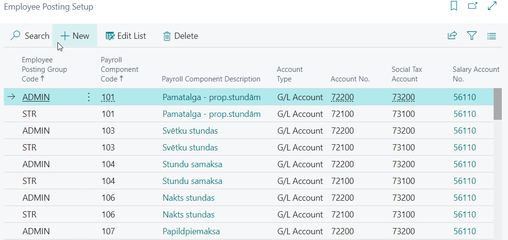
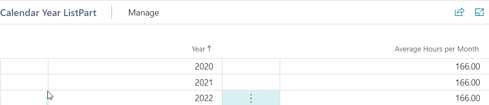
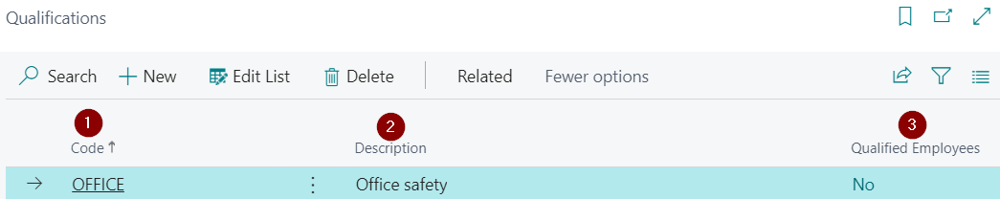
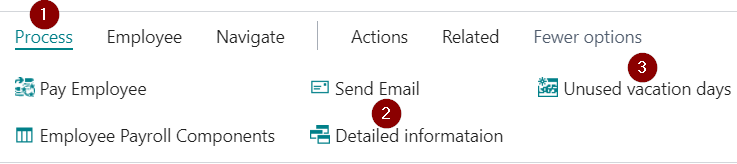
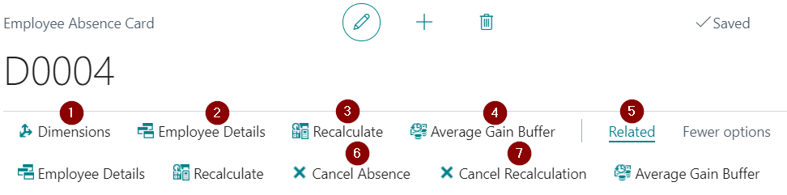
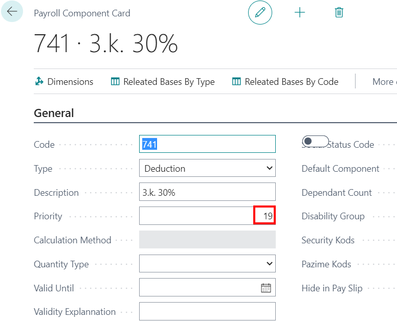
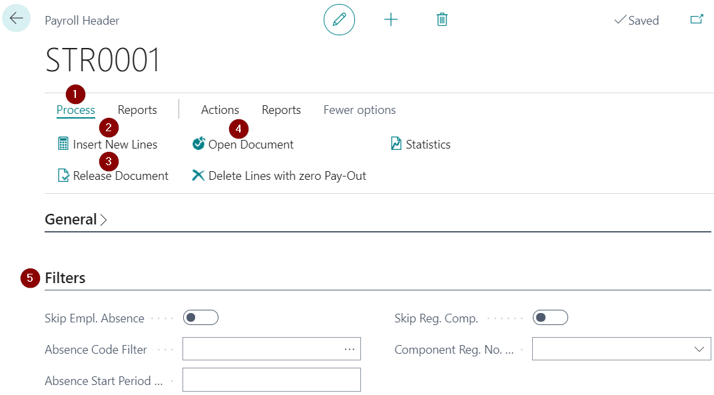
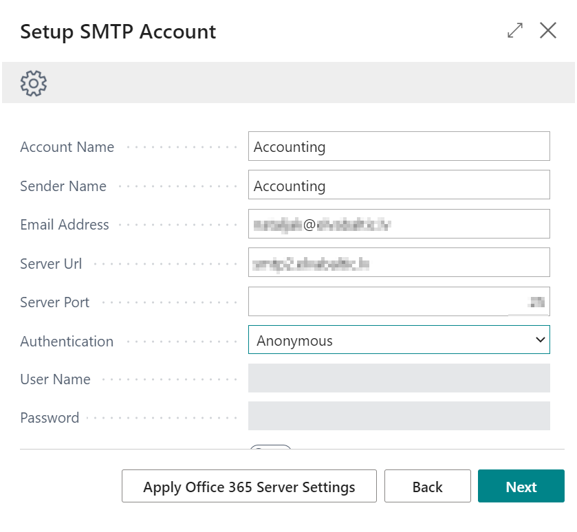

How to get started
To start using Dynamics 365 Business Central Latvian Payroll, you do not need to choose a specific role center. The functionality will work from any Role Center. However, we recommend to use LV Alga role center to provide all shortcuts on the home page for easier and faster access to payroll transactions.
Role Center
No specific role center is required, because the functionality can be accessed via search pane. However we recommend to use role LV Payroll for the convenience of the user.
Permission Sets
Use of Latvian Payroll require the LV-HR-PAYROLL permission set to be assigned per user or user group.
Applying a configuration package
The basic settings and codes required for use of Latvian Payroll are created by applying the configuration package.
To apply the configuration package, click the Search (1).
Then type in the search window Configuration packages (2) and select it from the offered options (3).

Click the following buttons on the configuration package window toolbar Process (1) - Import package (2) and select the appropriate package file from your file storage. Highlight the downloaded package with one click (3) , and then click the buttons Process (1) un Apply package (4).

Configuration package content
The configuration package enters the following information into the system:
- Countries/Regions
- Payroll-related chart of accounts
- General ledger setup related to salaries
- General journal templates and batches
- Units of measures
- LV postal codes
- Bank account card for salary payments
- Bank posting group
- Number series and their lines
- SWIFT codes
- Causes for absence codes
- Employee statistics groups
- Employee posting groups
- References to articles of the Labor Law
- Human Resources setup
- Payroll setup
- Payroll components and setup
- Payroll bases and setup
- Social statuses and status codes
- Reduced interest rates for absence
- Calendars and calendar changes for current year.
- Posting setup for salary payments
- Posting setup for salary components
- PFPIS income and easing types
General system settings
Company information include the following mandatory fields:
- Name (Company name)
- Registration No.
In the Bank accounts section, a bank account card for salary payments will be loaded with the configuration package. The following fields are mandatory on this card:
- SWIFT Code
- IBAN
In the Chart of accounts section, the standard accounts required for payroll postings will be loaded with the configuration package. If necessary, we recommend renumbering / renaming these accounts so that no adjustments need to be made to the posting settings.
In the Dimensions section should be entered dimensions, that will be used for Payroll.
Setting up
In order to successfully function of Dynamics 365 Business Central Latvian Payroll according to the requirements of your company, the following settings are available.
The basic settings are imported with the configuration package, however, the settings described below shall be additionally checked and/or completed to ensure and verify the exact adaptation of the system to the needs of your company.
| Setup name | Imported with package | User created | User is editing | The user is not recommended to edit | Comment |
|---|---|---|---|---|---|
| Payroll Setup | Yes | - | Yes | - | The setup is described in the chapter "Payroll setup". |
| Payroll Components | Yes | - | (Yes)* | Yes | * The value on the "Settings" tab must be updated according to changes in the legislation. The settings are described in the chapter "Salary components". |
| Bases | Yes | - | (Yes)* | Yes | * In some cases, the user can adjust the calculation of average earnings and deductions for injunctions. The settings are described in the chapter "Bases". |
| Employee Posting Groups | Yes | (Yes)* | Yes | - | * The configuration package will import standard posting groups. If necessary, they can be renamed, or add new ones. The setup is described in the chapter "Employee posting groups". |
| Employee Posting Setup | Yes | (Yes)* | Yes | - | * The configuration package will import the posting setup, but if you add a new employee posting groups, the posting setup lines must be replenished. The setup is described in the chapter "Employee posting groups". |
| Payroll dimension setup | - | Yes | Yes | - | Not mandatory. The settings are described in the chapter "Company settings". |
| Calendars | Yes | - | Yes | - | If necessary, you can create additional calendars. On the "Calendar change ListPart" tab, you must add the working day dates when the working time is shortened. The settings are described in the chapter "Calendars". |
| Bank Holiday Calendars | Yes | - | Yes | - | If necessary, you can additionally create calendars. On the "Calendar change ListPart" tab, you should add dates to holidays that are different each year. The settings are described in the chapter "Calendars". |
| Causes of Absence | Yes | - | - | Yes | The reason codes for absentees should be reviewed and, if necessary, adjusted or supplemented in consultation with ELVA consultants. The settings are described in the chapter "Causes of Absence". |
| Departments | - | Yes | Yes | - | The settings are described in the chapter "Employee setup". |
| Positions | - | Yes | Yes | - | The settings are described in the chapter "Company settings". |
| Payroll Bank Accounts | Yes | (Yes)* | Yes | - | * The configuration package will import the bank card to the payroll bank account. If there are several bank accounts used for salary pay, you need to add new bank account cards. The setup is described in the chapter "Payroll setup". |
Payroll setup
When you apply the configuration package, the default settings are already complete, but we recommend that you review all the settings to suit your business needs.
Tab: General
| Field name | Description |
|---|---|
| Salary Currency Code | Specifies the payroll currency code. If salaries are calculated in local currency, leave the field blank. |
| Automatically Create Employee Position | If there is a check mark in this field, then when creating a new employee, a position card will be created automatically. |
| Department Dimension Code | Specifies the default dimension code |
| Pay Slip Send Mail By | Indicates how to send salary slips - Outlook or SMTP protocol. In the case of SMTP, fill in the following fields. |
| Pay Slip Sender Name | Indicates the name that sends out pay slips. |
| Pay Slip Sender E-Mail | Specifies the e-mail through which payroll notes are sent. |
| No Justif Absence 12M Check for Average | This option works if the second feature “Use Curr. Month in Avg. Gain if Period not Full". If the attribute is not inserted, the current month is not taken if the duration of the eligible absence is less than 12 months, but if the duration of the absence is more than 12 months, the current month will be included in the calculation of average earnings. |
| Use Curr. Month in Avg. Gain if Period not Full | Enable if in case of half period, current month should be included in the average gain calculation. |
| Average Gain Precision | Indicates the precision (decimal point) with which the average earnings will be used in the calculations. |
| Average Abs. Code For Report | Absence code for average earnings. |
| Bank Holiday Coef | The coefficient is used to calculate the allowance for working hours on public holidays and holidays. |
| Night Pay Coef | The coefficient is used to calculate the allowance for night work hours. |
| Overtime Coef | The coefficient is used to calculate the bonus for worked overtime. |
| Income Tax Lvl 1 Income Limit | Level 1 limit. |
| Income Tax Lvl 2 Income Limit | Level 2 limit, for employees with A1 certificate. |
| Income Tax Global Base Code | Used to facilitate the transition to another level. |
| Default Calendar | National calendar for week of 5 workdays. |
| Default Calendar 6DDN | National calendar for week of 6 workdays. |
| No Uncalc. Relief Transfer | Indicate if you do not want that unapplied reliefs will be carried over to the following months' salary calculations. Unapplied reliefs are transferred through the entries in Component Register, which is created at the time of calculation. If at the time of the calculation there was an indication that the unapplied reliefs should not be carried over, then there will be no entry in the Component Register and they will not be taken into account next month. |
| Compensated Bank Holiday Hours Enabled | Enables if it's necessary to compensate holiday hours, what falls into working days, if the employee have a monthly salary. |
| Compens.Bank Holiday Hours For Empl./Terminat. | Works only if function Compensated Bank Holiday Hours Enabled is enabled. Enables if it's necessary to compensate holiday hours, what falls into working days, if the employee has been hired/terminated in the current month. |
| Child Care Absence Filter | The corresponding absence code. |
| Absence Code for Correction | Code with which payroll recalculation lines appear in the Absence register. |
| Vacation Day Type | Indicates how the holidays are counted - Working days or Calendar days. Provided in cases where no vacation periods are not used. |
| Vacation Days per one Period | Specifies the number of vacation days due per employee per period. |
| Vacation Paid Days | Specifies the number of paid vacation days due to each employee per period. |
| Default Hour Qty. For Vacation/Average Calculation | Indicate the default number of hours per day used in the compensation calculation as well as the average earnings. |
| Allow Detailed Payment Posting | A check mark in this field indicates that the salary payment will be posted in detail, rather than grouping everything in one amount. Salary payments are exported to the payment journal and can be posted by the user with standard posting for each employee individually. In this case, in the general ledger can be seen how much each employee receives. Therefore, a second accounting function is provided for salaries, which can be grouped by dimension and then booked into payments. |
| Employers Soc. Tax Acc. Type | Specifies the account type to which the calculated employer social tax will be posted. |
| Employers Soc. Tax Acc. No. | Specifies the account to which the calculated employer's social tax will be posted. |
| Salary Pay Date | Specifies the payout date that appears on the payroll header and employer reports for State Revenue Service. |
| Advance Pay Date | Specifies the advance payment date that appears on the advance list header. |
| Bank Journal Template Name | Indicates the journal through which salary payments will be made from the bank account. |
| Next period Deduction Component | Component used in correction transactions. In case a payment has already been made from the salary list, then in the next salary list of the current month this payment will be listed under the indicated salary component code. |
| No System Component Registers | Indicates if you do not want to use system-generated Component Register entries in payroll calculations. In case adjustments are required and the "Do not use" tick is enabled, notifications of adjustments are displayed during the calculation, but the register entries will not be created. |
Tab: Numbering
| Field name | Description |
|---|---|
| Salary Nos. | Specifies the salary list number series. |
| Prepayment Nos. | Specifies the prepayment number series. |
| Advance Nos. | Specifies the advance payment number series. |
| Storno Nos. | Specifies the correction list number series. |
| Employee Position Nos. | Specifies the employee position number series. |
| Component Register Nos. | Specifies the Component register number series. |
| System Component Register Nos. | Specifies the number series for system Component register. |
| Position Nos. | Specifies the number series for system position register. |
| Bank Payment Nos. | Specifies the series of bank salary payment numbers. |
| PFPIS Nos. | Specifies the number series of the report document for State Revenue Services' "The amounts disbursed to the notice of a natural person" (PFPIS). |
Tab: Components
| Field name | Description |
|---|---|
| Advance Payroll Component Code | The specified component will appear on the salary list as a deduction from the advance list. |
| Prepay Payroll Component Code | The specified component will appear in the salary list as a deduction from the prepayment list. |
| Minimum Salary Component Code | Specifies the minimum salary component. |
| Negative PayOut Component Code | Specifies the negative payout component. |
Tab: Reports
| Field name | Description |
|---|---|
| Manager No. | Indicates the person who will sign the salary statements as manager. |
| Status Code Enabled | If this function is enabled, when filling in the date of recruitment or dismissal in the employee card, the system will automatically offer to enter the employee status code in the list Status codes, from which information for SRS report Information on employees is obtained. |
| Executor No. | Indicates the person who will sign the salary statements as executor. |
| Income Tax in Calculation Period | Indicates that SRS report “The employer's report on payed social and income tax” presents the personal income tax for the current period. |
| Exclude Income Tax Clarif. | The tick works only if no tick is inserted in “Income Tax in Calculation Period”. In case if “Exclude Income Tax Clarif” is enabled, Employer's report will reflect the income tax amount of the previous calculation period in the income tax field. In case if “Exclude Income Tax Clarif” is not enabled, then the amount of income tax will include the income tax amount of the previous calculation period and the current monthly updates for the previous period. |
| PFPIS Default Income Type Code | It is used in the PFPIS report in case the employee was not granted benefits and no calculation was made because the employee was unpaid in absence. In this case, the default income code will be linked to the gain. |
| Soc. Tax Rep. Income Base Code | Indicates the revenue base for Employer's report. |
| Soc. Tax Rep. Soc. Tax Base Code | Indicates the social tax base for the Employer's report. |
| Soc. Tax Rep. Income Tax Base Code | Indicates the income tax base for the Employer's report. |
| Soc. Tax Rep. Risk Base Code | Indicates the risk fee base for the Employer's report. |
| Soc. Tax Rep. Pension Base Code | Indicates the pension contribution base for the Employer's report. |
| Soc. Tax Rep. Solid. Tax Base Code | Specifies the solidarity tax base for the Employer's report. |
| Company is a Startup | Attribute for Employer's report. |
| Stat. Group Change Status Code | Status code for reports in case of position change. |
Payroll bank accounts
The configuration package imports the bank account card for salary payments and its setup. Defining setup is important for successfully exporting payroll payments from the system. You can adjust the settings if necessary.
Following fields are available at Payroll Bank Accounts:
| Field name | Description |
|---|---|
| Payroll Bank Account No. | Payroll bank account is selected. |
| Description | Freely defined description. |
| Output File Type | The most commonly used is SEPA (xml format). |
| File Path | If you are using a type FIDAVISTA , then please leave a blank field. If you are using a type txt, then you must specify the folder where the file will be saved. |
| Separate Payments | You should tick here, if you need to send a payroll payment for each employee individually as a separate document. |
| Group by Employee No. | You should tick here, if a payout is made to one employee from multiple lists, then in the bank file a single record is created for one Employee No. |
For the convenience of the user, the configuration package also imports a batch of the General journal for salary payments, what needs to be used when preparing salary payments.
Payroll components
Salary calculation is made from different salary components – incomes, deductions, reliefs, taxes, etc.. All components are listed in Payroll components.
Tip
Generally, most of these components are common to all companies and are prepared in advance - while creating a new customer base. Therefore, it is not recommended to delete and modify these values without consulting ELVA consultants.
Each component has a separate card where settings are made and it is possible to assign Dimensions (1) and view calculation bases, in which the specific component is used, by clicking on Related Bases By Type (2) and Related Bases By Code (3).
Tab: General
| Field name | Description |
|---|---|
| Code | Freely defined code. |
| Type | Select the appropriate type from the list. |
| Description | Freely defined component name. |
| Priority | Specifies the priority of the component in the payroll calculation process – the smaller the number, the higher the priority. Thus, this component will be included in the salary calculation sooner. Priority falls automatically when you create a new payroll component, it is not advised to change on your own. |
| Calculation Method | Choose from the list how the component will be calculated |
| Quantity Type | It is necessary to specify which units of measure to be used when calculating overtime in the timesheet. |
| Valid Until | Until what date the component is in effect. |
| Validity Explanation | Freely definable text that will be reflected in the calculation of salaries in the error message in case the component is not already in force. |
| Social Status Code | Provide a social status code for the social tax component. |
| Default Component | Enable if this component fills in automatically when you create payroll components on the employee card. |
| Dependant Count | Is filled in case it is a relief component regarding dependants – inserts the appropriate number of dependants. |
| Disability Group | Is filled in case it is a relief component regarding disability – fills in the appropriate disability group. |
| Global Dimension 1 Code | If necessary, indicate the 1st global dimension for the salary component. |
| Global Dimension 2 Code | If necessary, indicate the 2nd global dimension for the salary component. |
| Hide in Pay Slip | Enable if the information about this payroll component will not be printed in the pay slip. |
Tab: Additional Info
| Field name | Description |
|---|---|
| Net Amount | Enable if the net amount is used in the calculation. If the net component has an amount with a negative sign, this amount will be considered as a gross amount. |
| Overtime Component Code | Specifies the attached Overtime payroll component. |
| Bank Holiday Component Code | Specifies the attached Bank Holiday Hour payroll component. |
| Night Pay Component Code | Specifies the associated Night Hour Payroll components. |
| Compensated Hour Comp. Code | Specifies the payroll component that is used in the payroll with hourly rate calculation to compensate the bank holiday hours that fall during normal working hours and the employee did not work on that day. |
| Over Annual Limit Comp. Code | Specifies the payroll component code that will be used in the payroll calculation if the limit for this component is exceeded. |
| Relief Available Amount Base | Base that defines the amount of relief for a given component. |
| Uncalc. Relief Comp. Code | Specifies the payroll component code that will be applied to transfer uncalculated reliefs to salary calculations for the next months. |
| Income Tax Lvl2 Component Code | Income Tax level 2 Base Code |
| Income Tax Lvl3 Component Code | Income Tax level 3 Base Code. |
| Always Use Calculation Period | Enable if it is necessary to use the current calculation period for income tax calculation. |
| Split To Related Components | Enable if components are formed from setup (base amounts) and are divided according to the components that are in the base amounts. |
| Base Salary | Enable if this component is recognized as a base salary component. |
| Bank Holiday Pay in Vacation | Enable at the basic salary component cards if you want that payment for bank holidays (which falls on an employee's work day) to be calculated during vacation. If a bank holiday falls during vacation, the system reduces the number of days taken by the holiday by these days. |
| Nonworking Bank Holiday by Average | Enable at the basic salary component cards if you wan to pay average salary, for a worker's holiday falls on a bank holiday that falls on a working day according to the national calendar.To calculate average earnings per day, the check mark must be at Allow Bank Holiday Hours what is located at employee card's section Employee Payroll components. |
| No G/L Posting | Indicates that the corresponding component data will not be posted to the general ledger. |
| Salary Account No. | Indicates the corresponding general ledger account in which Payroll Payments will be posted. |
| Posting Group Account Sign | Indicates the side of the posting group: debit or credit. |
| Include Zero Amount | Enable if you want to create a payroll line with 0 amount (there is no possibility to deduct the amount, but there is a possibility that the user can adjust the amount of the deduction). It is necessary to generate a queue to be able to transfer money to third parties. |
| Join Amount in Pay Slip | Amounts are joined based on the payroll component code |
| Join Day/Hour in Pay Slip | Days/Hours are joined based on the payroll component code |
Tab: Posting
| Field name | Description |
|---|---|
| Employee Posting Group Code | Selects from the list to which group this component applies. |
| Account Type | Selects from the list. |
| Account No. | Payroll account number is selected from the chart of accounts (or vendor/customer if the type is vendor/customer). |
| Social Tax Account | Specifies the Account Number of the Employer's Social Tax (DDSN) Cost. DDSN can be posted to different cost accounts specified for each employee posting group. |
Tab: Setup
| Field name | Description |
|---|---|
| From Date | Indicates the date from which this value is valid. |
| Amount | Indicates a value if it is constant. |
| Calculation Type | Indicates whether the value entered will be an amount or a percentage |
| Base | If percentage is selected, indicate the base from which amount the percentage will be calculated. |
| Base Annual Limit Amount | The limit is indicated, after which no calculations are made. |
| Description | Free field to fill. |
Employee posting groups
Employee posting groups are used when amounts obtained in payroll calculation must be distributed between different general ledger accounts (for example, administration payroll costs and worker payroll costs ). To view all payroll postings on one page, on the Employee posting groups toolbar press a button Posting Setup
| Field name | Description |
|---|---|
| Code | Employee posting group code. |
| Payables Account | Specifies the ledger account to be used when posting vendor debts to employees in this posting group. |
Employee Posting Setup
This list summarizes the posting setup of all payroll groups, depending on the Employee posting group code.

Following fields for setup are available:
| Field name | Description |
|---|---|
| Employee Posting Group Code | Code name of the employee posting group. |
| Payroll component code | Specifies which payroll component is reflected in postings. |
| Payroll Component Description | Payroll component name. |
| Account type | Account type of the fields Account No. and Social Tax Account. |
| Accounts No. | Account number. |
| Social Tax Account | Employer's social tax account number. |
| Salary Account No.. | Offset account. No editable field, just for informational purposes. |
| Posting Group Account Sign | Debit or credit side mark of the fields Account No. and Social Tax Account. No editable field, just for informational purposes. |
Bases
Bases are settings that determine the calculation of various salary components - vacation, sick leave as well as algorithms for calculating some reports. These amounts can be defined as needed.
Each base has its own card and all base cards are grouped in the Bases list.
Tab: General
| Field name | Description |
|---|---|
| Base Code | Freely defined code. |
| Description | Freely chosen description. |
| Related Payroll Component Code | This functionality is intended for extended filtering of data. If the Related Component code is specified for the base, then only the rows from the payroll component rows are counted, where the component code or the related component code coincides with the base component related component code. There are limitations to the related component (for gathering correct PFPIS), therefore it is highly recommended to consult with ELVA consultants. |
| Income Tax Lvl Filter | If percent rate is selected, indicate the basis from which the (base) amounts will be calculated the percentage. |
Tab: Setup
| Field name | Description |
|---|---|
| Plus Type | Indicate the types of components that will be included in the calculation of the amount of base. |
| Minus Type | Indicates the types of components that will be deducted from the amount of the base. |
| Plus Code | Indicate the specific components that will be included in the calculation of the amount of the base. |
| Minus Code | Indicate the components that will be deducted in the calculation of the amount of the base. |
In addition, in each table, it is possible to indicate the date from and until which the relevant component or component type operates in the calculation. This data is preserved in history.
Calendars
The calendar is the basis for all calculations. In each employee's position card must be indicated a working time calendar code. The calendar is used to calculate working days and hours, as well as to calculate planned working days and hours per month, which are used to calculate absences.
Each calendar has its own card. Working time calendar cards are summarized in the list Calendars. The configuration package imports several standard calendar types. The user can create additional calendars depending on the needs of the company. Working days, which have different count of working hours (for example: days before the holidays ), need to be replenished manually annually in each calendar.
The following fields are available for settings when creating a new calendar:
Tab: General
| Field name | Description |
|---|---|
| Code | Freely defined code. |
| Description | Freely chosen description. |
| Bank Holiday Calendar Code | A holiday calendar code that is linked to this specific calendar. |
| Bank Holiday Calendar | Mark that this calendar is a bank holiday calendar bank holiday calendars only). |
| Work outside working days | Notes that employees also work on weekends. |
| Cycle Calendar | Mark if this calendar is created as a cycle calendar. |
| Cycle Start Date | Defines the first day of the cycle calendar. |
Tab: Calendar Summary
Calendar entries show information about each day, taking into account the associated bank holiday calendar. If a bank holiday calendar is specified in the title of the calendar, then all holidays apply to that calendar as well. Changes can be made to each calendar individually - transfer specific working days, shorten working hours for working days before the holidays, indicating specific dates. In case that a holiday what falls during a normal working week should be compensated, this information can be registered in the tab Calendar change ListPart.
Tab: Calendar Change ListPart
| Field name | Description |
|---|---|
| Recurring System | Period of the year (commonly used for bank holiday calendars), Period of a week or Cycle. |
| Date | If necessary, indicate a specific date (commonly used for bank holiday calendars). |
| Day | Specifies the name of the day of the week. |
| Cycle sequence number | If the recurrence is Cycle, identicate the cycle sequence No. |
| Description | Freely chosen description. |
| Nonworking | Check whether a given day is a day off. |
| Bank Holiday | Mark whether a given day is a bank holiday. |
In case that a public holiday is moved to another day (for example, 18 November or 4 May), this information must be entered in the calendar with the type Holiday and with compensated hours.
Tab: Calendar Year ListPart

The year and the average number of hours per month are indicated in case the employee has the aggregated working time and the base salary in proportion to the hours, the average number of hours per month is taken into account for the calculation of the hourly rate. This rate is used for night hours, overtime, public holidays, holiday / hourly compensations.
Bank Holiday Calendars
The configuration package of the system creates a standard holiday calendar with already set holidays, which repeats every year on the same date. (for example: Christmas, Midsummer, etc.). Bank holidays that do not repeat on the same date (for example: Easter, Mother's day, Pentecost, and postponed public holidays as well), must be replenished manually each year.
Tab: General
Only fields Code and Description are filled, and embedded a feature Public Holiday Calendar as well. The other fields on this tab are inactive and are filled in by the system.
Tab: Calendar Summary
Calendar entries show information about each day, taking into account entered data in the tab Calendar Change ListPart.
Tab: Calendar Change ListPart
If the holidays are repeated on the same dates each year, the Recurring System field is selected as Annual Recurring and the corresponding settings are made. If the holidays do not repeat on the same dates each year, then Recurring System fields is left blank and the corresponding settings are made.
Status codes
To generate a State Revenue Service report from the system Notification of employees, the status codes need to be defined:
| Field name | Description |
|---|---|
| Code | Status code. |
| Description | Name of the code. |
| Description2 | For extended description. |
| Number | Specifies the order in the report Notification of employees, usually these numbers match the sequence, what is stated in Cabinet of Ministers Regulations. |
| Date Formula | Specifies the date formula based on which the system will calculate when the Notification needs to be handed in the EDS |
Causes of absence
To register an absence, causes of absence codes are necessary. All reason codes are initially imported into the system via the configuration package and are listed Causes of absence. The code card can be opened by clicking on the required line of code and pressing the buttons on the toolbar Actions - New document - Card.
It is not recommended to do any changes to the reason codes and their settings.
Tab General
| Field name | Description |
|---|---|
| Code | Freely defined absence code. |
| Description | Description of absence. |
| Unit of Measure Code | Selects from the list. |
| Total Absence (Base) | The system shows how many times this absence is registered. Taking into account that this is a standard Microsoft field that is not maintained, it always shows zero. |
Tab Payroll
| Field name | Description |
|---|---|
| Unjustified Absence | Sign of unjustified absence. |
| Calculate in Payroll as | Selects from the list how the absence is calculated: 1. Average – the calculation period is taken first in the previous 6 months, if not, then in the previous 12 months. If not, the program checks Payroll Setup, is there a check mark in the field Use Curr. Month in Avg. Gain if Period not Full. If this field is not checked, then the average of the minimum wage is calculated; 2. Keep salary separated – the calculated basic salary will be retained for the selected period, the amount being divided into another salary component; 3. Keep Salary – for the selected period nothing changes in the calculation of the basic salary (for example: justified absence); 4. Prepayment – pays basic salary as Prepayment for the selected period (vacation ahead); 5. No Salary – no salary is calculated for the selected period (for example: unpaid vacation, unjustified absence); 6. Without Relief – Does not calculate salary and benefits (for example: sick leave B); 7. Blank – overrides in the payroll calculation. |
| Payroll Component Code | Indicate the corresponding salary component. |
| Next Period Payroll Comp. Code | Indicate the component if the payment for the next period is allocated to another component. |
| Calendar Day Limit | Indicates the number of days of cause of absence (for example, sick leaves, business trips), to warn of exceeding the limits. |
| Reduced Pay | Indicates reduced rates by day (for example.: how sick leave is paid). Click on the field link to set. |
| Forced Calendar Code | Selects the default calendar according to which the calculation for a specific absence will be performed. |
| Forced Calendar Code 6DDN | Selects the default calendar to calculate for a specific absence according to a six-day calendar. |
| Day Type | Indicates the type of absence calculation by days (periods): - Work Day; - Calendar Day; - Manual - the number of days does not depend on the period. |
| Relief in Calc. Period | A checkmark in the field indicates that the relief will be calculated this month. If there is no check mark, it will be carried forward. (for example: long vacations for teachers). |
| Include in Actual Worktime | If there is a check mark, then the days are considered as actually worked (for example: a business trip). |
| Calculation Priority | Indicates the sequence number of the cause of absence code in the chain of salary calculation activities - the lower the number, the higher the priority. Priority can be given to both - salary components and reasons for absence. If the salary component comes from an absence record (for example: compensation of unused vacation.), then priority is taken from the cause of absence. |
| Average By Hours | You can choose between: leave blank, Only SDL ( for the totaled working time), All. |
| Post Next Periods | A check mark is placed if part of the next period of the temporary absence is booked to the expenses of the next period. |
| Graph Code | Indicates a freely chosen code that will be used to indicate this type of absence in the schedule printouts. |
| Schedule Printout Colour | Selects the color in which the absence days are marked in the schedule printout. |
| Day Off Saved Salary | Used when an employee is given a holiday that must be paid according to the principle “Keep salary”, but not included in real time (for example: blood donor days). If enabled then value in the field Calculate in Payroll as must be Average. |
| Not compensate Bank Holiday Hours | Enables if holiday hours what falls into working hours included in absence period will not be offered to compensate. |
| Not paid compensated Bank Holiday Hours | Enables if during the period of absence, the holiday hours included in the absence would not be added to paid days together with base salary. |
| Absence Start Status Code | Specifies the status code that will be displayed in the report Information on employees (Employee social sign codes) in connection with the beginning of the absence. The employee status code will be filled in the system after entering the start date of the absence. |
| Work Restart Status Code | Specifies the status code that will be displayed in the report Information on employees (Employee social sign codes) in connection with the end of the absence. The employee status code will be filled in the system after entering the end date of the absence. |
Tab Vacations
| Field name | Description |
|---|---|
| Influence on Vacation | Indicate the effect of the absence on the balance of annual leave. |
| Vacation Compensation | Vacation compensation feature. Used in the Vacation Compensation Code Card. |
Company structure and positions
In order to start enter the data in the employee card easily, without a hitch, it is recommended that you initially perform the settings listed below, which will be required to fill in the fields on the employee card:
- create a list of departments ;
- create a list of employee positions;
- define the payroll dimensions;
- set up calendars according to which salaries will be calculated
Departments
In the system, you can maintain structured information about the departments. The information will be both current and historical, because the structural units in the system are not deleted, but closed.
To ensure the departmental hierarchy, sorting and indent methods are combined. Thus, one department is subordinate to another if it is after the main unit and has one level more indention. Depending on the depth of department indention and the number of departments, a department code shall be drawn up. Departmental indentions are created through functions Assign Indent (1), Decrease Indent (3) and Increase Indent (4).
You can link dimensions to departments by clicking the button Dimensions (2)
| Field name | Description |
|---|---|
| Code | Department code defined by the user. |
| Description | Department name. |
| Address | Address where the department is located. |
| Date Created | Date when the department was created. |
| Date Closed | Date when the department is closed. |
| Parent Department code | Department code to which the department is subject. |
| Manager Position Code | The corresponding manager position code from the list Positions. |
| Department Dim. Value Code | Department dimension value code from standard payroll dimension classifier. |
Positions
All positions used in the company are listed in Positions. A separate Job Card must be created for each position.
If the information about the profession code and department code is corrected in the system, then in order for these changes to appear in the employee card, the data update function shall be activated in the position card, by clicking on Process (1) and Update Employee Positions (2).
You can add dimensions to the position by clicking Related (3) and choose the function Dimensions (4).
| Field name | Description |
|---|---|
| Code | New position's code. |
| Description | Positions title. |
| Profession Code | Code from Employee Statistic Groups. |
| Department Code | Code from Departments. |
| Department Description | Description from Departments. |
| Total Loading | Total loads that are expected for this position. |
| Current Loading | Loads what are currently occupied in the company. |
| Current Employee Count | Number of employees employed in a particular position. |
| Vacant Loading | How many workloads are still vacant for this position. |
| Date Created | The date when the position was created. |
| Date Closed | Position close date. |
| Salary Amount | Informative field. |
| Work Time Undeterminable | Note if the job time is undetectable and subordinated to the company's needs. |
Payroll Dimension Setup
The use of this functionality is not mandatory for the successful operation of the system.
In the Payroll Dimension Setup indicate the dimensions that will be used in the salary calculations. The other dimensions available in the system will be ignored.
Following fields are available:
| Field name | Description |
|---|---|
| Dimension code | Selects a dimension from the list that will be used in the salary calculation. |
| Value From | Specifies the level from which the dimension value will be taken: a) Source – the specified dimension code is taken from the Absence Registration, Payroll components, Payroll components registry; b) Payroll component – The specified dimension code is taken from the payroll component; c) Employee Position – The specified dimension code is taken from the employee position; d) Employee – The highest level, the specified dimension code is taken from the employee card. |
| Don't Use Hierarchy | If there is no check mark in this field, the specified dimension code is searched at higher levels. If there is a check mark, then only at the selected level. |
| Blank Value Allowed | Checks that the dimension value is not an empty value after the above settings. If there is a check mark in this field, the system does not make an error message if in any level (at a specific level if there is a check mark in the do not use hierarchy field) dimension is not found. |
The system offers the ability to add numerous dimensions to the departments and the positions. If dimension values are indicated at the department and other dimension values are indicated at the relevant position, all (both those indicated to the department and those indicated to the position) will be shown at the position card of the employee.
Tip
We do not recommend to specify the same dimensions, but with different values for both - the department and the position.
Employee data
In order to hire a new employee, a new employee card must be created. Each employee has their own card, where you must enter all available information relevant to the employee. The employee card contains all the information needed for records, calculations and reports.
All employee cards are listed in Employees.
For the convenience of users, an employee card copy function is also available for entering employees into the system (In the tool bar of the employee card press Navigate-Creating Add. Info-Copy Employee), which is convenient to use if the employee has resumed work in the company after the dismissal. However, to avoid possible mistakes (for example: in the calculation of average earnings, in the statement regarding the amounts paid to natural persons), it is recommended to create a new employee card.
Employee Card
Fields marked with an exclamation mark "!" at tab Field type are mandatory.
Tab: General
| Field name | Field Type | Description |
|---|---|---|
| No. | ! | Fills in automatically. |
| First Name | ! | The employee's name. |
| Middle Name/Initials | Employee's middle name or initials. | |
| Last Name | ! | Employee's last name. |
| Search Name | Fills in automatically. | |
| Gender | ! | Gender of employee. |
| Company Phone No. | Free field for information. | |
| Company Email | Free field for information. | |
| Last Date Modified | Information field for controlling the amounts paid to the employee. | |
| Privacy Blocked | Enabled, if the employee has written a request to block information about him. In this case, this employee is not reflected in the relevant lists. | |
| PayOut Amount | Information field for controlling the amounts paid to the employee. | |
| Payment Amount Before Correction | Information field. | |
| Payment Amount | Information field for controlling the amounts paid to the employee. | |
| Remaining Payment Amount | Information field for controlling the amounts paid to the employee. | |
| Disallowed Congratulations | To be filled in if the employee does not want to post his/ her birthday after GDPR. |
Tab: Address & Contact
This tab lists addresses, phone numbers, email addresses, and alternate addresses. The number of alternative addresses can be unlimited. Fields are filled in as needed. If the employee wants to receive salary slips to the e-mail address, then the field Private Email is mandatory.
You can enter an unlimited number of alternate addresses for each employee. To do this, enter the code and the corresponding contact information in the Alternate addresses list. Next, one of the Alternate Address codes can be entered in the field provided on the employee card tab Address & Contact.
Tab: Administration
| Field name | Field Type | Description |
|---|---|---|
| Employment Date | ! | If the Status Code Enable function is enabled on the Reports tab of the Payroll Setup, then by filling in this field, the system will offer to enter the employee status code for the EDS report Employee Social Sign Codes. Later you can reopen this window by clicking the buttons on the toolbar Navigate - Additional Info. For Payroll - Status Codes |
| Status | ! | Active, Inactive, Terminated. Active fills in by default. |
| Inactive Date | Planned date of termination, if an employee has been recruited for a limited period of time. | |
| Cause of Inactivity Code | Choose employee inactivity reason code. | |
| Termination Date | ! | Mandatory field when terminating an employee. |
| Grounds for Term. Code | Indicates the ground for termination code when terminating the employment. | |
| Emplymt. Contract Code | Indicate the code of the employment contract related to the employee. | |
| Resource No. | Indicates the employee resource number. | |
| Salespers./Purch. Code | Indicates the code assigned to the employee who is the seller or buyer. |
Tab: Personal
| Field name | Field Type | Description |
|---|---|---|
| Birth Date | ! | Indicates the employee's date of birth. |
| Social Security No. | ! | In case of a non-resident, NMR code assigned by the Republic of Latvia. In case the personal identification code starts with 32, the date of birth will not be filled in. |
| Previous Social Security No. | ! | If a new personal code is entered in the Social Security No. field, the previous personal code will be automatically copied to the Previous Social Security No. field. Make sure that the previous personal identification code is copied in the field Previous Social Security No, prior to that the field Previous Social Security No must be blank. |
| Union Code | If the employee has joined an association. | |
| Union Membership No. | Required field when releasing an employee who is a member in an association. | |
| Residence | ! | Resident fills in by default. In case the option is selected Nonresident, then for non-residents the income tax will not be filled in in the report of employer. |
| Nonresident ID Code | Indicate the personal identification code assigned to the non-resident. | |
| Working Permit Date | Indicate the date until which the work permit is valid. |
Tab: Payments
| Field name | Field Type | Description |
|---|---|---|
| Employee Posting Group | ! | Selects an employee posting group from the list. |
| Application Method | Specify how to apply payments to this employee. | |
| Bank Branch No. | Indicate the name of the bank branch of the employee's salary account. | |
| Bank Account No. | Specifies the employee's bank account to which the payroll payment is to be made. | |
| IBAN | ! | International code of the employee's bank account to which the salary payment is to be made.** |
| SWIFT Code | ! | Bank SWIFT code. |
Tab: Payroll
| Field name | Field Type | Description |
|---|---|---|
| Social Status Code | ! | Selects the employee status code from the list. |
| Company Contract | Enable if the employee works under a company contract. | |
| Royalty | Enable if the employee receives royalties. | |
| Test Period | Indicate the length of the test period. For example, 3M. | |
| Test Period End Date | The value is filled automatically based on the recruitment date and the specified test period length. | |
| Vacation Day Correction | This field is used to enter the balance of accrued vacation days. | |
| Average by Hours | If the calculation should be made taking into account the hours. | |
| NonResident Income Type | Indicate if the employee is a non-resident. |
Tab: Employee Positions
An essential part of an employee card!
This tab specifies the parameters required for the calculation, such as the calendar, the date of appointment, the title of the position.
Click on the buttons to assign the position to the employee Related (1) - Creating Add. Info (2) - Create new employee position (3).
A new window Employee Position Card will open, where following fields are available:
| Field name | Field Type | Description |
|---|---|---|
| No. | The numbering of the employee's position is necessary for the system to be able to correctly calculate the salary in case the employee's position has changed. In case of a change of position, the new position is automatically assigned a new Employee position number. | |
| Employee No. | Selects an employee from the list. | |
| From Date | The position takes effect on a date specified in this field. For the first employee position, this field is filled in by the recruitment date by default. | |
| To Date | Indicate if the position has a known expiry date. | |
| Planned To Date | Indicate if the post is planned to expire. | |
| Position Code | ! | Selects an employee's position from the job list. |
| Position Description | ! | The name is read automatically from the selected position card. |
| Department Code | ! | Selects the employee's department. |
| Primary Position | If the employee has several positions, then the main one among all positions must be indicated. | |
| Skip in Salary | In case of termination, this field is checked automatically as soon as the last Salary list has been created. | |
| Salary Type | ! | Indicates the type of employee's salary calculation (normal or aggregated working time). |
| Loading | Intended for statistical reporting. | |
| Calendar Code | ! | Selects from a list of calendars. The calendar is the basis for all calculations. |
| Calendar Name | The calendar code is read automatically from the Calendar list. | |
| Cycle Calendar Setup | in field Calendar code. | |
| Don't use def. vacation cal. | Do not use the default vacation calendar. | |
| Statistics Group Code | The appropriate code is selected from the position code classifier. | |
| Work Time Undeterminable | Indicate if it is not possible to determine the hours actually worked. | |
| Global Dimension 1 Code | If necessary, indicate the 1st global dimension. | |
| Global Dimension 2 Code | If necessary, indicate the 2nd global dimension. |
If necessary, it is also possible to assign dimensions to the employee position in the Employee Position Card.
Employee Payroll Components
The Payroll Components specify the tax, benefit, and deduction components that should be included in the employee's payroll calculation.
Employee Payroll Components can be viewed by clicking on the buttons Process - Employee Payroll Components on the toolbar .
When creating a new employee card, Payroll Components shall be generated automatically for the first time. To do this, click the buttons on the toolbar Related (1) - Creating Add. Info (2) - Create Employee Payroll Components (3).
Employee Payroll Components is the place where should be indicated the basic salary component as well as other regular additional income components (additional pays, bonuses, rewards, etc., which are constant amounts for a long period of time each month).The salary advance amount to be paid shall be specified in the advance component. If necessary, the lines are supplemented with information on reliefs - Dependants, Disability, Repressed.
Tip
In case the employee has submitted the salary tax book to the employer, this should be registered in the list Related information, which can be found in the toolbar by clicking on Navigate -Additional Info. For Payroll.
Payroll Components shall also include information on long-term deductions (writ of execution, alimony, fee for car use, etc). Deductions are recorded in the employee card only if they are constant amounts that are repeated each month. One-time deductions should be recorded in Component Registers.
Processing the writ of execution
The writ of execution can be registered in the employee card's Employee Payroll Components
In the specific example, 20% of the base ALIM (salary after tax) has been deducted using salary component No. 740, where the minimum deduction is EUR 250 per month, and EUR 1250 has been deducted for previous periods. No limit to the total amount of the deductions has been set.
The following fields must be filled in the Employee Payroll Components tab to set a writ of execution:
| Field Name | Description |
|---|---|
| Code | Choose a salary component. Depending on the settings of the salary component, the amount of the deduction is calculated. |
| From Date/ To Date | If known, indicate the dates on which the deduction is to take place. |
| Amount | To be completed in case a specific amount is known to be deducted each month. |
| Total Limit | Specifies the total amount of debt according to writ of execution. |
| Calculated Deducted Amount | Informative field. The system here represents the total amount deducted for this particular writ of execution (the total amount from all salary lists). |
| Month Limit | Indicates a minimum monthly limit. |
| PayOut Limit | Indicates the minimum limit of the employee's salary payment. In this case, the field PayOut Limit Base must be completed. |
| PayOut Limit Base | Indicates the limit base if a PayOut Limit is specified. |
Possible configuration options for the deductions:
- 30% of the employee's payment is deducted, but not more than 350 EUR per month. The total amount to be deducted is 350 EUR. It is shown that the full amount of 350 EUR has been deducted from the employee.
- 20% is deducted, provided that the amount of the employee's salary payment is at least 370 EUR per month. The total amount to be deducted is 350 EUR. It is shown that on this moment 199.36 EUR has been deducted from the employee.
Tip
The system does not provide both options at the same time - when using the Month Limit and PayOut Limit!
Additional employee information
You can enter various additional information related to a specific employee in the employee card:
- Qualifications
- Confidential information
- Alternate addresses
- Relatives
- Miscellaneous article information
- Status Codes
- Related information
- Payments to third parties
- Comments
- Attachments
- Employee picture
Qualification
A qualification list of employees can be maintained in the system. Based on this, it is possible to keep track of when trainings and briefings need to be repeated (for example, using a report Employee qualifications).
In order to start the registration of qualifications, it is necessary to register in the list Qualifications the codes of the types of qualifications and their descriptions, relevant to the company. Qualification codes are entered on each new line, indicating a Code (1) of your choice and a Description (2) of the relevant qualification. If in field Qualified Employees (3) is a check mark Yes, then by clicking on the link (3) you can view a list of which employees have this particular qualification.

Once the*Qualifications list is complete, you can define employee qualifications by selecting Employee Cards in the toolbar Related - Employee - Qualifications.
| Field name | Description |
|---|---|
| Qualification Code | Code from the register Qualifications. |
| From date | Date of qualification. |
| To date | Qualification valid until. |
| Type | Select the origin: Internal, External, from a Previous Position. |
| Description | Description of the type of education, filled in from the qualification register. |
| Institution/Company | Name of the external qualification institution of origin. |
| Comment | A note that a comment has been added to the post. |
Confidential Information
Employee information classified as confidential can be stored in a separate list. Nowhere else in the system will this information be displayed. Each record of confidential information must define a code and provide a description of it. You can add a comment to each entry.
Confidential Information the list can be opened by clicking on the button Navigate in the employee card.
To be able to review data for multiple employees is available a report Employee Confidential Information, available by entering a name in the system search field.
Alternate Addresses
You can enter an unlimited number of alternate addresses for each employee. To do this, enter the code and the corresponding contact information in the list Alternate Addresses. Next, you can enter one of the Alternate Address codes in the field Alt. Address Code provided in the Employee Card tab Address & Contact.
Relatives
Each employee's card can contain data about relatives and their contact information in case of emergency. Children are given a date of birth, which makes it easy to check how many additional days of vacation are to be granted to the employee.
For the needs of the company, it is possible to collect data on employees' relatives using a report Employees Relatives, where data can be selected by various filter criteria (for example, by type of relative - children only).
Misc. Article Information
Each employee's card can list the inventory issued to the employee. First you need to define the codes of the issued inventory and their names in the list Employee Miscellaneous Articles. The inventory can then be assigned to the employee by recording a Serial Number for each item, determining the time of use, and adding a comment if necessary..
It is possible to use the report to control the issued inventory Employee Miscellaneous Article Information, available by entering a name in the system search field.
Status Codes
In the Employee's cards toolbar Navigate - Additional Info. For Payroll a function Status codes is available, where you can view and edit the social status codes associated with the employee, and on this basis the report Employee Social Sign Codes is prepared. If in Payroll Setup tab Reports is enabled function Status Code Enabled, then after the date fields are entered (what are related to status codes, for example date of recruitment, or date of termination, or unpaid leave), the system will prompt you to enter an employee status code in Status codes register.
Related information
In the Employee's cards toolbar Navigate - Additional Info. For Payroll a function Related information is available. Here you have to enter the fact of submission of the Salary Tax Book for each employee and indicate the date. Here should also be made a note and indicated the date for non-residents.
In addition, a feature is available for calculations Apply Progressive Income Tax.
Payment to third parties
If an order has been received to withhold an amount from an employee's salary and transfer it to another person's account (for example bailiff's account), the Payment to third parties functionality found on the employee card toolbar Navigate - Additional Info. For Payroll is provided for this case. The line must contain all the required information so that the system can prepare the payment for sending to the payment journal and later export to the bank. Before you can start this process, you will need to create a new vendor card for this third party (unless such a vendor card haven't been used and created before).
| Field name | Description |
|---|---|
| Employee No. | The system enters automatically. |
| Empl. Payroll Comp. Line No. | The relevant deduction component of the salary should been selected from the list. |
| Payroll Component Code | The system enters automatically. |
| Vendor No. | From the list, select the supplier to whom the amount should be transferred. |
| Vendor Name | The system enters automatically. |
| Vendor Bank Code | The supplier's bank account code is selected from the list. |
| Description | Freely chosen. |
| Payment Information | Text to be included in the payment order. |
| PayOut Amount | The system enters automatically. |
| Payment Amount | The system enters automatically. |
| Remaining Payment Amount | The system enters automatically. |
Attachments
If necessary, it is possible to attach files in the system in any format to the employee card (for example, CV, diplomas and other documents). The functionality is available in the Employee Card toolbar Employee.
Reports
The following reports can be easily accessed from the each employee card by clicking on Process (1):
- Detailed information (2) - information and links to all the calculations, payments and absence entries what are related to this particular employee.
- Unused vacation days (3) - the current accrued vacation days appear on the work date in a pop-up window.

Working Time Accounting
For the calculation of the salary, the number of hours worked is taken into account, which is calculated on the basis of the type of calendar attached to the employee in the Position card, registered absences in the Employee Absences and hours registered in the Hour Registers.
When recruiting a new employee and filling in the Calendar code field if the Position card, the employee will be assigned the planned number of hours according to the settings of the assigned calendar code.
Hour Registers
If the hours actually worked by the employee differ from the planned hours, then by entering a new entry in the Hour Registers and indicating the employee number, you can enter the days and hours the employee has worked actually in the particular month. For aggregated and shift work, the system has a control that does not allow entering/ importing more than 24 hours a day.
The number of hours can be corrected until the salary is calculated (salary calculation transferred to payment journal or salary list is posted).
Tip
If it is necessary to correct the number of hours worked after the salary has been paid or booked, the reversal calculation must be made in the same month as the error.
Working Time Accounting (schedule)
At the end of the month, you can print a timesheet using a report Schedule Print Calendar. You can print a timesheet template, which can be adjusted as needed by sending it to Word or Excel.
The table shows the planned working hours according to the Calendar attached to each employee.
By enabling the Accounting button in the report printout window, the schedule printout will include the registered absences in the requested period for each employee, and the number of planned working days/ hours will be reduced accordingly.
Tip
The hours entered in the Hour registers do not appear in the schedule printout. To obtain data on actual working hours, it is necessary to import the report into Excel or Word environment and prepare a printout with the actual distribution of hours by days.
Absences
All deviations from the planned working hours must be entered on a separate absence card. All absence cards are listed in the Employee Absences register.
Registering a new absence
To enter a new absence, you must go to the Employee Absences register and create a new Employee Absence Card by clicking on the button New.
You can define dimensions for employee absence by clicking on Dimensions (1).
By entering Employee No. it is possible to view the details of the selected employee in Employee Details (2), so that you can easily view, for example, records of previous absences or salary data for previous periods.
If an employee has entered a related absence and the dates overlap, it is possible to recalculate by clicking on Recalculate (3). By default, recalculation entries are shown on the next month for which payroll has not been calculated.
In the Average Gain Buffer (4) you can view the data of the previous months on the average earnings.
Cancel Absence (6) and Cancel Recalculation (7) options related to absences are available below the toolbar button Related (5). The function Recalculate (3) is used if working hours were recorded during the registered absence. Recalculation can be canceled with Cancel Recalculation (7) function. In all other cases, the function Cancel Absence (6) should be used.
Tip
When you cancel your absence, the system does not recalculate the salary. If it is necessary to adjust the number of days worked during this period, the cancellation must be made in the same month.

Tab:General
| Field Name | Description |
|---|---|
| Employee No. | Employee selected from the list to register absence. |
| Cause of Absence Code | Code selected from the list. |
| From Date | Date from which the absence is valid. |
| To Date | Date until which the absence is valid. |
| Description | Name of Cause of Absence code, system generated field. |
Tab:Payroll
| Field Name | Description |
|---|---|
| Unjustified Absence | Enable if the absence is unjustified and there is no need to calculate the payment. |
| Calculate in Payroll as | Settings from the absence list, system generated field. |
| Calculate in Year | The system enters automatically based on the date of absence. Editable field. |
| Calculate in Month | The system enters automatically based on the date of absence. Editable field. |
| Days | The system enters automatically, based on the calendar assigned to the employee. |
| Hours | The system enters automatically, based on the calendar assigned to the employee. |
| Skip in Prepayment | If enabled, the calculated absence fee will not be paid in Prepayments. |
| Related Payroll Line | The system automatically indicates if a related document exists for the entry. |
| Related Payroll Header | The system indicates automatically when an absence calculation is made. |
| Global Dimension 1 Code | Indicate the 1st global dimension, if applicable. |
| Global Dimension 2 Code | Indicates the 2nd global dimension, if applicable. |
| Related Entry No. | Absence linking function. If the employee has entered a series of absences, which must be calculated with the same average earnings, then this absence should be indicated in this field. |
| Keep salary with average | Enables if the average salary should be kept during the absence. |
| Day Average Gain | If you need to change the daily average earnings, enter it manually in the field before calculating. |
| Hour Average Gain | If it is necessary to change the hourly average earnings, enter it manually in the field before the calculation. |
| Average Gain Changed | The system enables it automatically if values are entered in the daily or hourly average gain fields. |
Vacation
The balance of the available vacation days can be checked on the employee card by pressing Unused vacation days (1).
You can adjust the balance of vacation days through the field Vacation Day Correction (2), where to increase the number of unused days the number of corrective days must be entered with a minus sign, but to decrease - with a plus sign.
Vacation accruals
By opening the report named Average Gain With amounts and selecting a date of your choice in the report print window (1), unused vacation days of employees, as well as their costs can be calculated, taking into account the average daily earnings of employees and the costs of the employer's social tax. Also, you can send (2) the amount of vacation accrual entries to the general ledger journal (3). The code of the accrual component must indicate the Savings Component Code (4) of the payroll component, which indicates all the accounting settings. It is recommended to create a component that will not be used in salary calculations. As an example, component card no. 190 see below.
When you run a report, transactions will be created in the specified ledger journal:
- Vacation accrual postings at the reporting date.
- Vacation accruals with a minus sign with the last date of the following month.
In case it is necessary to create vacation accruals by dimensions, it is necessary to indicate appropriate dimensions in the reference parameters.
Sick leave
All sick lists received from employees are registered in the Employee Absences register.
Sick leave payment settings are included in the relevant cause of absence code cards. The functional fields of the absence code cards are described in detail in the chapter Causes of Absence.
If a temporary sick leave is submitted after the salary calculation (salary calculation has been paid or posted), then it is recommended to perform the calculation in the month of the end of the sick leave.
Absence analytics
OIn the list of Absence Registration are listed all data on employee absences.
For more convenient absence data analysis, we recommend using filters in the list. For more convenient data processing, we recommend opening the selected information in Excel by clicking the button * Open in Excel* on the toolbar.
Benefits and deductions
Component Registers
The component register is intended to be use in cases where the employee has income or deductions that differ from month to month - are determined outside the program. When filling in the Component Register, all the mentioned salary components will be included in the monthly salary calculation indicated in the register title.
Creating a new register
A new registry is created on the home page or in the system search by selecting Component Registers and choosing New.
The number will be assigned to the register automatically. Next, select the Year (1) and Month (2) for which the benefits and deductions will be entered (when opening a new list, the current year and month will be entered automatically by default). It is also recommended to fill in the Description (3) field in free form, choosing the description, which is then easy to understand and after which it is easy to find the required entry - for example, by entering the department name or component type name, or a description of the employee group, etc.
The list of employees in the Component Register can be compiled in several variants - by automatically generating with filters by selecting employees and specifying a specific salary component code, and by selecting employees one by one. We recommend that you prepare the data in Excel using the export and import function in the toolbar by clicking on Actions (4) - Import From Excel 5) or Export To Excel (6).
If necessary, the generated or imported rows can be adjusted manually in the Component Register ListPart by deleting redundant employee by clicking on Manage (7) - Delete Line (8) or by changing the Payroll Component Code (9) and/ or Amount (10). The period is entered automatically - the same as indicated on the card header. If the component relates to another period (for example, income is adjusted), the value must be changed to the required one.
Employee Card
It is recommended to enter in the Employee's card all the benefits and deductions, which are included in the calculation of monthly salary as constant amounts for a long period of time. In doing so, the employee will be automatically added registered benefit to the salary calculation each month and/ or the relevant deduction will be deducted.
It can be easily entered in the payroll component rows of employee card.
Processing the writ of execution
In case a company receives a writ of execution for an employees, this document must be registered in the system. The writ of execution can be registered in the employee card's Employee Payroll Components.
In the specific example, 20% of the base ALIM (salary after tax) has been deducted using salary component No. 740, where the minimum deduction is EUR 250 per month, and EUR 2000 has been deducted for previous periods. No limit to the total amount of the deductions has been set.
The following fields must be filled in the Employee Payroll Components tab to set a deduction for writ of execution:
| Field Name | Description |
|---|---|
| Code | Choose a salary component. Depending on the settings of the salary component, the amount of the deduction is calculated. |
| From Date/ To Date | If known, indicate the dates on which the deduction is to take place. |
| Amount | To be completed in case a specific amount is known to be deducted each month. |
| Total Limit | Specifies the total amount of debt according to writ of execution. |
| Calculated Deducted Amount | Informative field. The system here represents the total amount deducted for this particular writ of execution (the total amount from all salary lists). |
| Month Limit | Indicates a minimum monthly limit. |
| PayOut Limit | Indicates the minimum limit of the employee's salary payment. In this case, the field PayOut Limit Base must be completed. |
| PayOut Limit Base | Indicates the limit base if a PayOut Limit is specified. |
Possible configuration options:
- 30% of the employee's payment is deducted, but not more than 350 EUR per month. The total amount to be deducted is 350 EUR. It is shown that the full amount of 350 EUR has been deducted from the employee.

- T20% is deducted, provided that the amount of the employee's salary payment is at least 370 EUR per month. The total amount to be deducted is 350 EUR. It is shown that on this moment 36 EUR has been deducted from the employee.
Tip
The system does not provide both options at the same time - when using the Month Limit and PayOut Limit!
Possible setup - distribution in parts
It is possible to control the sequence of the writs of execution. The writ of execution [first part] is covered in full. Accordingly, the next parts are covered afterwards. If there is not enough funds, but the parts are equal, the amount to withhold is divided proportionally.
Possible configuration:

If, after making the deduction, the amount has to be transferred to another person to another bank account, all the bank account data must be entered accordingly by clicking on the buttons on the employee's card. Navigate - Additional Info. For Payroll - Payment to third parties.
To set up a payment, you must fill in the following fields:
- Employee Payroll Comp. Line No. – select the appropriate deductive component from the list of components related to the selected employee.
- Payroll Component Code – will be filled in automatically from the field Employee Payroll Component List.
- Vendor No. – selects the third party from the list of the Vendors. If necessary, enter a new vendor card.
- Vendor Bank code - select the required bank account from the vendor's bank account list.
- Description – enter a freely chosen payment description.
- Payment Information – enter the payment information that needs to be reflected in the bank's payment details. For example: according to decision No. xxxxx for Employee, pers. code xxxxxxxxxxx.
- When starting the salary calculation, deductible amount will be calculated accordingly to the conditions that were specified in employee' s card.
To make a payment to third parties, you need to run the function Export to Payment Journal under the Report button in the Salary List's toolbar.
The following parameters must be entered in the pop-up window:
Select from the list Third Parties Payments; Select the default payment journal batch; Enter the posting date of the payment.

Payment entries will be created in the payment journal. To create a file to be imported to the bank, press Bank - Export (Export button for regular vendors).
Vacation accruals
System provides a report for vacation accruals Average gain with amounts. Available at Reports - Add. Reports - Average gain with amounts or by using systems' search function.
Reports' Print Settings::
- Date On – indicates the date, on what accruals should be calculated.
- Show Additional Vacation Days - enable if additional days also should be included in report
- Send to Gen. Journal – enable if entries for accruals should be sent to general ledger journal additionally to report's printout. If enabled, will be created accrual postings with date from field Date on and the same posting lines with minus with following month's last date - for reversal.
- Gen. Journal Template – select the ledger template where postings should be prepared, if function Send to Gen. Journal enabled.
- Gen. Journal Batch – select the Batch name where postings should be prepared, if function Send to Gen. Journal enabled.
- Savings Component code – The code of the accrual component must indicate. It is a code of the payroll component, which indicates all the accounting settings. It is recommended to create a component that will not be used in salary calculations.
In case it is necessary to create vacation accruals by dimensions, it is necessary to indicate appropriate dimensions in the reference parameters. The dimension value will be searched in employee's position, if not found and in Payroll Dimension Setup is not enabled Don't use Hierarchy then system will search the dimension of employee. employees in report will be grouped by dimension and at the bottom in employee posting groups and dimension values in two amounts. If there will be enabled Send to Gen. Journal, then rows in G/L Journal will be created by dimensions. Also, take into account if the journal's rows will have other dimensions, then this dimension complements existing - combines together in the dimension line.
Salary calculation
Advances
For employees who have an advance component entered in the card, it is possible to generate a list of advances. Information about the paid advance will be automatically included in the calculation of the salary for the specific month and deducted from the amount to be paid.
A new advance list is created by clicking on the shortcut +Advance List on the system home page. All lists of advances are included in a common list Advance Headers.
The number will be assigned to the list automatically. Next, select Year and Month (automatically will be filled in with the current year and month). Advance list lines are automatically generated at the click of a buttons Process (1) - Insert New Lines (2), where a filters can be applied to generate only specific lines.
After generating the advance list and the initial check, it is recommended to change the status of the list from Open to Released by clicking on Release Document (3). This protects the calculation data against accidental corrections. If necessary, the status can be changed in the opposite direction with Open Document (4).
If no filters were used before generating the employee list, then the system will list all employees and those with no advance payment will be queued with an amount of 0. These employees can be deleted from the list by clicking the button Delete Lines with zero Pay-Out (5).
The following additional functions are available in the Report and Actions sections of the Advance List toolbar:
- Pay Slip – possibility to print and send pay slips for advance payment.
- Detailed Salary List – printout of the advance list for approval.
- Export to Payment Journal – payment records will be prepared for export to the payment journal, from which they can be further exported to the bank and posted.
- Import Advances From Excel - it is possible to import the data from an Excel file.
Prepayment
The vacation pay that needs to be paid to the employee before the vacation, as well as various lists of bonuses or gifts, should be paid from the list of prepayment - this is, before the end of the month. Taxes are calculated from the amounts in Prepayment in the appropriate period. When generating a payroll, the amounts paid in prepayments will automatically be deducted and the amount paid will be reduced.
Prior to the calculation of the prepayment, all the information must be added to Absence register and to Component Register.
If you need to separate the calculations by type, then use the tab Filters (4). On the Filter tab, select the criteria for the calculations that you want (or don't want) to pay in the prepayment. For example, without entering any filter criteria, the current absence register entries and the component register entries will be prepared for the selected employee at prepayment line.
Tip
If, together with the vacation pay, it is also necessary to pay the salary for the period worked until the leave, the absence record with the code ALGA_PER (Salary for the period) must be recorded in the Absence Registration.
A new list of prepayment is created by clicking on the shortcut +Prepayment List on the system home page. All the prepayment lists are included in a common list Prepayment Headers.
The number will be assigned to the list automatically. Next, select Year and Month (will be filled in automatically with current year and month). Automatic generation of prepayment list lines is done by clicking on a buttons Process (1) - Insert New Lines (2).
After generating the prepayment list and initial check, it is recommended to change the status of the list from Open to Released by clicking on Release Document (3). This protects the calculation data against accidental corrections. If necessary, the status can be changed in the opposite direction with Open Document (4).

The following additional functions are available in the Report section of the prepayment list toolbar:
- Pay Slip – possibility to print and send pay slips for prepayment.
- Export to Payment Journal – payment records will be prepared for export to the payment journal, from which they can be further exported to the bank and posted.
- Detailed Salary List – printout of the prepayment list for approval.
Salary calculation
After when
- position changes are registered
- salary changes are registered,
- updated salary tax book information,
- absences are registered,
- data is entered in the hour register, if applicable,
- one time benefits and deductions have been entered in the Component Register,
- entered monthly bonuses and deductions in the employee card, and other changes in employee data (such as an bank account)
a monthly closing salary list should be generated. Each employee can be in only one current salary calculation within a month period. You can create multiple payrolls – for example, each department can have its own. Typically, a salary list for the terminated employees is created separately to correctly perform a payments.
A new salary list is created by clicking on the shortcut +Salary List on the system home page. All salary lists are listed in Salary List.
The number will be assigned to the list automatically. Next, select Year and Month (automatically filled in with current year and month). The automatic generation of salary list lines is done by clicking on the button Process (1) - Insert New Lines (2).
By using the function Insert New Lines (2) filters can be applied to the employee number and to the department code. If the function is used without filters, then the list will include all employees for whom are specified any calculation amounts for this month.
After generating the salary list and initial check, it is recommended to change the status of the list from Open to Released by clicking on Release Document (3). This protects the calculation data against accidental corrections. If necessary, the status can be changed in the opposite direction with Open Document (4).
In the Salary list toolbar sections Report un Actions following additional functions are available:
- Pay Slip – possibility to print and send salary slips for salary payment.
- Export to Payment Journal – payment records will be prepared for export to the payment journal, from which they can be further exported to the bank and posted.
- Detailed Salary List – printout of the prepayment list for approval.
In the Salary list tab Lines - Lines (5) the following functions are available for each selected employee:
- Employee Details – a shortcut to all historical calculation data related to the particular employee is available.
- Worktime – data for the reporting month on planned and actual working hours are available.
- Average Gain – if the employee has had a paid absence in the reporting month, then the data on the absence and the average earnings used to pay for the absence can be viewed.
The salary list can be changed and deleted until it is posted and/ or sent to the payment journal. If corrections or adjustments become necessary after the payroll has been sent to payment journal, paid and/ or posting, recalculation functions should be used. Correction can be made to all document or just to a single line for a selected employee (or several employees). If you need to correct the entire document, click on the buttons Actions - Create Correction Document. If you only need to correct only some employee lines, in the Lines tab, select the line (or several lines) you want to correct and click Lines - Create Correction. corrective transactions are described more detailed in section Corrections and cancellations.
In order to generate a report related to the salary calculation, it is not necessary to post the salary list. All payroll reports are generated from salary lists, regardless of their status.
If the salary is calculated and Remaining Payment Amount is a negative amount (the employee is overpaid), then the overpaid amount is transferred to the next salary calculation (as a deduction) with the help of an entry generated by the system in the Component Register.
Dismissal of employees
To dismiss an employee, enter the Termination Date in the employee card tab Administration.
By confirming date entry, system will enter this date in the Employee Position tab field To Date (2) and will close all active Payroll components.
If in Payroll Setup tab Reports is enabled function Status Code Enabled, then after the Termination field To Date will be filled, the system will also prompt you to enter an employee status code for EDS report Employee Social Sign Codes.
When you enter the employee's termination date, the system will generate an absence record for unused vacation compensation (with code ATVAL_KOMP), which will be added automatically to the payroll calculation.
The necessary allowances or deductions for the final calculation may be added to the Components Register.
Preparing a report buffer (PFPIS list) for the EDS Statement on amounts paid to a natural person, in the tab's General Info field Month should be entered month when employee was terminated. In case of multiple employees, you can specify a termination period in the filter when generating buffer entries.
Salary payment
Preparing the payments
The salary is transferred to the employee's bank account. Information about the bank code and account is entered in the employee card tab Payments, but the type of payout is determined by the default payroll component (Code: BANKA) in the section Payroll Components.
Salary list for transfer to the bank can be prepared by clicking on Report (1) - Export to Payment Journal (2).
In the options you can select the required Payment Type (3):
- Employee Pay-Out (only payments to employees),
- Third Parties Payments (deduction payments to third parties),
- All (both of the above mentioned).
You can also use filter and choose Pay-Out Component Filter (4) (from which company account money will be transferred), and in which Gen. Journal Batch to make entries (5). In case it is necessary to correct already made payment, a tick must be placed at Fill Pay-Out Storno (6). After you post this cancellation journal, you can create a correct payments.
Entering the required parameters and pressing the OK button, opens the payment journal with the salary payout information.
Click the buttons Bank (1) un Export Payroll Payment (2) to get the payment information in the file.
To post the salary payment, click on the Post button in the Post/Print (3) section on the toolbar. However, if in the Payroll Setup tab General is not enabled option Allow Detailed Payment Posting, then to post salary payments, you need to press Payroll Paym. Group. Posting button in the Post/Print (3).
In addition to control and confirmation before pay, you have the option to print a report with a list of employees and the amounts to be paid to them and bank accounts where the payment will be transferred. The report is available in the toolbar section Report (4) - Salary Printout.
Payment to third parties
If, after making the deduction, the amount has to be transferred to another person to another bank account, then all the bank account data must be entered accordingly by clicking on the buttons on the employee's card. Navigate - Additional Info. For Payroll - Payment to third parties.
To set up a payment, you must fill in the following fields:
| Field name | Description |
|---|---|
| Employee No. | System generated field. |
| Employee Payroll Comp. Line No. | Select the appropriate deductive component from the list of components related to the selected employee. |
| Payroll Component Code | Will be filled in automatically from the field Employee Payroll Component List. |
| Vendor No. | Selects the third party from the list of the Vendors. If necessary, enter a new vendor card. |
| Vendor Name | Will be automatically filled in from the list of Vendors |
| Vendor Bank code | Select the required bank account from the vendor's bank account list. |
| Description | Enter a freely chosen payment name. |
| Payment Information | Enter the payment information that needs to be reflected in the bank's payment details. |
| PayOut Amount | A system-generated field that represents the amount calculated for the payout to this third party in all calculation periods at a total. |
| Payment Amount | System-generated field that represents the amount that has been paid to a third party in all calculation periods in total. |
| Remaining Payment Amount | A system-generated field that represents an amount that has been calculated but not paid to a third party in all calculation periods in total. |
To make a payment to third parties, you need to run the function Export to Payment Journal under the Report button in the Salary List's toolbar.
The following parameters must be entered in the pop-up window:
- Select from the list Third Parties Payments in Payment Type (1);
- Select the Default payment journal batch in Gen. Journal Batch (2);
- Enter the Posting Date (3) of the payment.
Entries were created in the payment journal.
To create a file to be imported to the bank, press Bank (4) and Export (5) - payment to regular vendors.
Posting a salaries
To post a Salary list, you must first use the function Release Document (2) from the toolbar's section Process (1) to lock the list and to make it no longer editable. With starting the function Post Document (3) a Payroll Posting Buffer will be created, showing all payroll entries in the rows.
After the checking the correctness of the data, click the OK button. The payroll accounting buffer generates data from the following sources:
- The accounts to which the payroll lines will be posted are read from the Payroll Component card's tab Posting.
- Employer's social tax accounts is read from the Payroll Setup field Employers Soc. Tax Acc. No.
- Cost accounts are red from each Income payroll component card's tab Posting.
- Reliefs and payouts are not posted in general ledger.
- The amount sign in the salary posting buffer determines the debit/ credit side for the tab Account No.. If the amount is positive, then the transaction will be as follows: 1200.00 D 72200 and K 56110 (First line in posting buffer below).
You can see the status of the salary lists and the fact of posting in the list Salary List.
Sending out salary Pay Slips
To send salary leaves on emails from the system, the following settings are required:
Email Accounts
Need to create an email account. Type in the system search function Email Accounts and select it from the list. To create a new account, press the buttons New - Add an email account. To send emails from payroll module, Account type should be selected SMTP - Use SMTP to send emails.

Complete SMTP setup: 
In the following step, you can check e-mail, as well as set this account as default:

Payroll Setup
For the sending out the pay slips, following information are required to complete in Payroll Setup:

System pay slips will send to the private e-mail specified in the employee cards tab Address & Contact. Sending starts by running a report Pay Slip and by inserting the checkmark in the field Send by e-mail.
Click on the buttons Report (1) - Pay Slip (2).
In the print settings window, select Send by e-mail, if you only need to send to selected employees, choose employees and specify the period, for what you want to send pay slips.
Corrections and cancelations
Correction lists
If it is necessary to adjust the calculation in the already booked / paid salary list, tax amounts, income amounts, payout amounts and others, then the correction functionality must be used. Because the correction can be made only when the previous calculation is canceled. All the created correction lists are compiled in a register Correction Headers.
There are different types of possible corrections:
- All employees in the Salary List have the same error in the payroll calculation:
1) on the salary list toolbar click the buttons Actions (1) - Create Correction Document (2);
2) a line generation window will pop up, where you can set filters if necessary.
3) will be generated a correction list in which the whole calculation one to one is reversed. The list of cancellations must be posted!;
4) data correction should be performed and a new salary calculation must be prepared. The amount of the first payroll payments will be included in the next calculation as a deduction.
After posting the reversal, in the corrected salary list's tab Lines reversed entries will be marked with Yes (4), that the line has a correction and the corresponding Employee No. (3) are highlighted in red. By clicking on a link Line Is Corrected (4), a correction list will open in which the whole one-to-one calculation is canceled.
Error in calculation algorithm due to incorrect tax rate, amount of relief, etc.:
1) correct tax, relief, etc. rates;
2) creates a new salary list without reversing or correcting the previous salary list;
3) click the button Insert New Lines and enables the function Create correction line, if exist payroll for this month in the payroll lines generation window. If necessary, select the same filters as it was in the payroll to be corrected;
4) the system will prepare a list of corrections that need to be posted. The amount of the first salary list payments will be included in the next salary list calculations as a deduction.Error in calculating salary for one or more employees:
1) In the Lines tab of the Salary List, select the employee (or several) who needs a correction.
2) By clicking the buttons Line (5) and Create Correction (6) the line is marked as corrected.
3) Make corrections and prepare a new salary list, where the calculation is made only for the corrected employee (or several).
Tip
If the initial salary list was not paid before the corrective list was created (the payment has not been posted), the system will not allow the payments to be exported, because the next payroll will take into account the information about the payments at the time of cancellation.
In case the salary calculation has been reversed and a new salary calculation has not been created for this month, all entries for this month are opened for correction: in the component registers, the absence registers and hour registers.
Absence corrections
We recommend to perform all absence corrections in the current month by correcting the previous salary list!
Sick List received late
Example: calculated and paid salary for 07.2020. A sick list has been received from the employee for the period 27.07.2020 - 05.08.2020.
Option - perform salary calculation correction in the current period 07.2020.
1) in the salary list 07.2020 a correction shall be made for the line of the relevant employee. Post the correction list;
2) In Absence Registration register a new sick leave and indicate 07.2020 in calculation date fields;
3) prepare a new Salary List for 07.2020 and in the tab Line include only the employee who needs to make the correction. Take into account, if a Hour Registers has been used to enter the hours worked by this employee, the system does not recalculate the salary component and the number of hours must be adjusted manually;
4) depending on the result, if extra payment must be made, then use function Export to Payment Journal, but if a deduction has to be made, it will be included in the calculation of salary 08.2020.Option - perform salary calculation correction in the next period 08.2020.
1) In Absence Registration enter a new sick leave and indicate 08.2020 in calculation date fields
2) In Employee absence card click on button * Recalculate*. In Absence Register list a check mark Recasted appears for this entry. As a result of the recalculation, the system creates a entry in Component Register for the current period (08.2020) with the previous month's salary correction records.
3) at the end of the period, calculate the salary for the current month. The income calculation will be included the previous month's adjustments.
Several sick leaves received late
Example: calculated and paid salary for 07.2020. Have been received from the employee a sick list A for the period 15.07.2020 - 24.07.2020 and sick list B for the period 25.07.2020 - 03.08.2020. Correction will be performed in next month - 08.2020.
1) In Absence Registration enter sick leave for a sick list A and indicate 08.2020 in calculation date fields. Do not recalculate!
2) In Absence Registration enter sick leave for a sick list B and indicate 08.2020 in calculation date fields. Recalculate by clicking on the button Recalculate.
When all absences have been entered, clicking on Recalculate once system collects information about all absences and it will make a one calculation based on all absences in the Component Register. In case that a recalculation is made for each absence, the result will be double entries, so the recalculation only needs to be performed once.
Employee gets ill during vacation
*Example: Salary calculated and paid for 07.2020. The employee has a vacation starting from 15.07.2020 and to 31.07.2020. The employee got ill during the leave and submitted sick list A for the period 19.07.2020. - 21.07.2020. and sick list B for the period 22.07.2020. - 31.07.2020. The correction will be performed in next month - 08.2020. *
1) In Absence Registration enter sick leave for a sick list A and indicate 08.2020 in calculation date fields. Do not recalculate!
2) In Absence Registration enter sick leave for a sick list B and indicate 08.2020 in calculation date fields. Do not recalculate!
3) In Absence Registration enter the vacation 15.07.2020. - 18.07.2020. and indicate 08.2020 in calculation date fields. Do not recalculate!
4) Open the absence card of the initial vacation and cancel it by clicking the button Cancel Absence. As a result of cancellation, the absence code ATVAL will be changed to the code CORRECTION, and also system created entries 08.2020 will be added to Component Registers (salary changes (if any), vacation pay paid). This information will be included in the salary calculation of 08.2020.
Employee withdrawn from vacation
Example: The employee has a vacation 15.07.2020 - 31.07.2020. Calculated and paid vacation pay and salary for 07.2020. After that it turns out that the employee has worked during 20.07.2020. - 21.07.2020. Correction will be performed in next month - 08.2020.
1) In Absence Registration enter the vacation 15.07.2020. - 19.07.2020. and indicate 08.2020 in calculation date fields. Do not recalculate!
2) In Absence Registration enter the vacation 22.07.2020. - 31.07.2020. and indicate 08.2020 in calculation date fields. Do not recalculate!
3) Open the absence card of the initial vacation and cancel it by clicking the button Cancel Absence. As a result of cancellation, the absence code ATVAL will be changed to the code CORRECTION, and also system created entries 08.2020 will be added to Component Registers;
4) If the hours actually worked for the employee are recorded Hour Registers, then enter the number of additional hours worked.
The result of the recalculation will be included in the 08.2020 salary list, erroneous and posted salary list 07.2020 will be left unchanged. The system with a minus sign will deduct the calculated vacation pay and add the salary for these days (except if working hours are entered via Hour Register). The amounts will be allocated to the periods for which they are calculated.
Changes in Absence start or end date
If the employee has an calculated absence, but after the calculation of the salary it is discovered that the period of absence was not correct, then it is possible to adjust this in the next period:
1) enter the correct absence, indicating the calculation month in which the correction is made;
2) cancel the previously entered absence by clicking the button on the absence card Cancel Absence;
3) calculate the current period salary. The differences between the correct and incorrect absence amounts are added to the current salary list with the help of the system-generated Component Register entry.
Reports
The Reports and Tasks shortcuts are available on the Role Center home page for quick access to key standard reports.
The system ensures the preparation and export of mandatory reports specified in Latvian legislation to the EDS:
- Employer's report
- Employee Social Sign code (if enabled)
- PFPIS List - The amounts disbursed to the notice of a natural person
- IINNR List - The amounts disbursed to the notice of a non-resident
You can also print reports for internal use, such as:
- Personal Accounts
- Average gain with amounts
- Payroll Component Tools
- Employee Payroll Components by Month
- Schedule Print Calendar
EDS reports
Employer's report
Setup
Reported data settings are available in Payroll Setup tab Reports, for what a detailed description of the fields is available in the chapter Payroll setup.
Preparing
In order to prepare the report Employer's report or Social Tax Report, in the report's print window, select the period for which you want to run a report (Year (1) and Month (2)) and enable Export EDS File (3), if you want to prepare also a file for upload to the EDS system.
Employee Social Sign code
To prepare Employee Social Sign code report, in the print window, enable the button to Create EDS XML file (1), if necessary, specific filter selection criteria should be set in the filter (2, 3) and, if necessary, indicate the period (4) for which a report needs to be prepared.
PFPIS List
Setup
In the list PFPIS easing are listed codes, which divides the PFPIS report by the reliefs applied. Codes and names must be entered in accordance with the State Revenue Service's methodological materials.
The settings for the data displayed in the report are available in the register PFPIS Income types. In the register are listed income type cards, defined in accordance with the State Revenue Service's methodological materials.
Tab: General Info
| Field name | Description |
|---|---|
| Code | Income type code from SRS methodological materials. |
| Period Length | Year or month. |
| Period Shift | Indicate whether there is a shift if the payout differs from the calculation period: No shift; -1M (for example, in the list of PFPIS for August will show the income calculated for individuals for July); -2M |
| . | |
| Use Easing | If enabled, it indicates that you want to use reliefs for the particular code. |
| Income Type Name | The title is entered in accordance with the SRS methodological materials. |
| Only Company contract | If enabled, only employees of company contracts are included in the relevant code |
| Skip Non-Residents | If enabled, non-residents will not be displayed. |
| Only Royalty | Only royalties will be shown. |
Tab: Amount Setup
Bases are indicated in the relevant fields, which will calculate the value of the corresponding fields in the report.
Preparing
A new document (or as it is called - buffer) must be created to create a statement of amounts paid to individuals in the list PFPIS Headers.
PFPIS buffer consists of 3 parts – General Info, Totals, PFPIS Line ListPart.
To prepare buffer, fill in the tab's General Info fields and click on the buttons Process (1) - Generate Records (2).
If in field Month is selected a Year, then report will be made for an active employees as of December 31. If the month is specified in this field, report will be made of terminated employees.
Once the data in the buffer has been generated and checked, you can prepare the export file for submission to EDS by clicking the button Export to XML (3).
Before submitting to EDS, the report can be printed and checked by clicking on the buttons on the toolbar Reports - Print Overview or Print Employee.
Tab General Info
| Field name | Description |
|---|---|
| No. | PFPIS document number. Fills in automatically. |
| Code | Company registration number, filled in automatically from Company information. |
| Description | Document description. |
| Year | Buffer year. |
| Month | Selects the month the buffer was created from the list. If report of termination is prepared, select the month in which the employees were terminated. If an annual statement is required for all employees, then select Year from the list. |
| Closed | Indication that the buffer has been submitted to the EDS and closed. |
| Responsible Person | Name and surname of the responsible person. |
| Phone No. | Phone number of the responsible person. |
Tab: Totals
R05..R16 – The totals of the buffer lines value fields.
Tab: PFPIS Line ListPart
Buffer lines are generated automatically when the function Generate Records is run. Various filters provided by the records generation window can be used to prepare the buffer.
IINNR List
To create a new report The amounts disbursed to the notice of a non-resident, a new document need to be created in the IINNR Headers by clicking on a button New. Fill in the required information and prepare the file for export to the EDS system.
Tip
To prepare the report export file, the system may require you to fill in the Company information fields Phone No. un Email.
Analytical reports
Reports for internal use in the company. Reports are available in the role center shortcuts Reports or by entering the report name in the system search field.
Reference Of Income
At the request of the employee, a statement creates a reference where the employer shall present the amount of wages and taxes paid for the selected period of time (3, 6 or 12 months). With the possibility to indicate the purpose of issuing the reference.
Average gain Per Employee
Upon request, an employee can be provided with a report on his/ her average earnings - daily and hourly. Data will be prepared for the current business date. In addition, a monthly breakdown of the average monthly earnings may be indicated.
Salary List (Pay slip)
You can print any monthly pay slip for any employee or Salary List.
Schedule Print Calendar
At the end of the month, you can print a timesheet using a report Schedule Print Calendar. You can print a timesheet template, which can be adjusted as needed by sending it to Word or Excel.
The table shows the planned working hours according to the Calendar attached to each employee.
By enabling the Accounting button in the report printout window, the schedule printout will include the registered absences in the requested period for each employee, and the number of planned working days/ hours will be reduced accordingly.
Tip
The hours entered in the Hour registers do not appear in the schedule printout. To obtain data on actual working hours, it is necessary to import the report into Excel or Word environment and prepare a printout with the actual distribution of hours by days.
Payroll Analysis
To use this report, you need to prepare a Payroll Analysis Template Card that will meet your business requirements. All template cards are listed in " Payroll Analysis Templates*.
Payroll Components analysis
In the report Empl. Payroll Comp. by Month the values of the salary components are expanded in the table by months for each employee separately.
But in the report Payroll Component Tools can obtain data for analysis by payroll component codes together for a separate salary list.
Personal Account
A separate report can be printed for each employee, which includes all the data of the employee's salary calculation by months in period of one year. In addition, in the table are listed all absences for this particular employee.
Average number of employees
By specifying the salary dimension and period, it is possible to obtain data on the average number of employees, the number of employees at the beginning of the period, the number of employees at the end of the period, and the number of terminated employees. You can add additional filters, such as selecting the number of employees by gender.